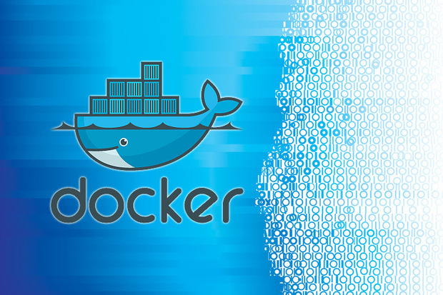
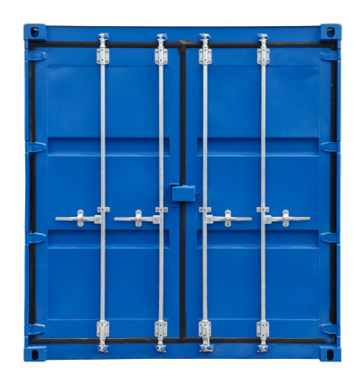

Created by Thomas Shaw (Build Engineer at Demonware) / @tomwillfixit
“Those who don't know history are destined to repeat it.”
Edmund Burke“We started looking at Docker today. It is very nice :) Perfect for regression testing. Thanks for letting us know about it.”
Build Engineer at Demonware (September 3rd 2013)“The journey of a thousand miles begins with one step.” Lao Tzu
Prototype installing a service in a Container
FROM centos59_golden
MAINTAINER Build Engineering
# make sure the package repository is up to date
RUN sudo yum update -y
# install service X
RUN sudo yum install service_X -y
# expose ports
EXPOSE 8080
# Start service when launching the container
ENTRYPOINT ["cd /opt/service_X;./service_X.py latest"]
Prototype running unit tests with Docker We ran every unit test inside a CentOS 5.9 container. We split the unit tests across lots of containers.

Single container

Multiple containers
We started to move some non critical CI from VMs to containers.
- Connected Bamboo with Docker API
- Docker 0.7 installed on all build agents
- Moved non essential RPM builds from VM to container
- Continued to Dockerize unit tests
Pitfall #1 : Treating the container like a VM
- "Full Stack" container with 8 services running
- Image size was atrocious
- Image build time was long
- Lesson learned : Container != VM
You've got Mail!
We wanted to spread the news about Docker so we emailed a few people. Well that was the intention.
Who did we email?
Everyone involved in Technology at Demonware.
What did the email say?
- We plan to move all builds from Vagrant VMs to Docker
- Docker is super fast
- We have better build throughput on build agents
- Less code to maintain
- Portable
What now?
Let's prove Docker can revolutionize how we build, test and deploy at Demonware.
We continued to spread the news about Docker
- Lightening Talk at Demonware Summit
- Docker Registry setup
- More tests being added to containers; smoke tests
- More Docker build agents added
- Mails sent for each Docker release detailing new features
- Competitions/Swag giveaways
Prototype using Docker to test Load Test tooling
- Containerize Load Test tools
- Containerize Load Test infrastructure
- Spin up/Tear down small clusters
- Nightly testing of tools
Fast Forward
Scroll down for some key dates in our history
First Docker Dublin Meetup sponsored by Gilt. Using Docker to run System Tests. Each test component in a separate container. We started using Fig. Fig was later acquired by Docker.inc and is now docker-compose. Fully containerized CI pipeline created. Second Docker Dublin Meetup hosted and sponsored by Demonware. Demos of Docker 1.3.0 and Fig 1.0 given. Docker presentation at Citigroup (Dublin) Preparing Docker Bootcamp material to be hosted at Gilt in Jan 2015.

July 9th 2014
July 29th 2014
August 28th 2014
August 29th 2014
September 18th 2014
November 5th 2014
November 26th 2014
December 11th 2014
Starting in January 2015 we hosted a number of Docker Bootcamps within Demonware and externally.
The aim was to :
- Introduce Docker to engineers
- Cover the basics such as building an image and running a container
- Give something back to the Docker community
- Gilt in Dublin. 28th/29th January 2015. Details here.
- Workday in Dublin. 11th September 2015
- Interested in hosting a Bootcamp? Get in touch

Demonware has also been actively involved in organizing Docker Meetups.
Scroll down for a list of Meetups
July 9th 2014
Inaugural Docker Dublin Meetup with Gilt
September 18th 2014
Demonware Ltd. and Docker: Past, Present and Future
October 5th 2015
With special guests Tom Barlow (Docker) and Casey Bisson (Joyent)
November 3rd 2015
With special guest Diogo Mónica, Security Lead @Docker
February 24th 2016
Building a Production ready PaaS at Yelp
March 23rd 2016
Docker Birthday #3 Celebration + Training
May 10th 2016
With special guest Jérôme Petazzoni, Tinkerer Extraordinaire @Docker
July 21st 2016
DockerCon 16 Recap Meetup
Join us :
Pitfall #2 :
“The greater the power, the more dangerous the abuse. ” Edmund Burke
- Use version numbers in image tags
- Use image labels
- Don't use Docker in Docker
- If docker image > 5 gig, review what is really needed
- Lesson learned : Put some guidelines in place
Docker Ecosystem
We are well versed in the basics of Docker by July 2015. Time to start using more tools from the ecosystem.
- Docker Machine
- Docker compose
- Docker Swarm
- Rancher
Prototype running infrastructure services in containers.
We used docker-compose to deploy and manage the following :
- Bamboo
- Jenkins
- PyPi
- Docker Registry
Pitfall #3 :
“Have a mind that's open to everything, get attached to nothing. ” Gary Busey
- Don't get attached to a particular OS flavour
- Constantly review and refine base images
- Treat the host and base OS like cattle
- Lesson learned : Be prepared to pivot
The end is nigh
Actually the end is now.
We are continuing to use Docker heavily at Demonware and these slides will continue to be updated.
Hopefully this brief history will prove to be useful and perhaps some of the pitfalls we encountered can be avoided.